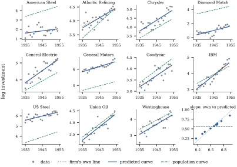

33.5 Growth curves
A growth-curve model gives each subject a curve of its own — a straight line, a polynomial in time — the population curve being their average. How is the average curve estimated, and how is an individual’s curve recovered from its own few observations? The second answer is the best linear unbiased predictor: a matrix-weighted average of the subject’s own noisy curve and the precise population curve, weighted by signal against signal-plus-noise — the shrinkage of Chapter 27 by a different road.
33.5.1. Two formulations
Let each of
The Potthoff–Roy formulation (Potthoff and Roy 1964) writes
where
The random-coefficient formulation gives each subject its own coefficient vector,
with
a covariance with
33.5.2. Estimation
Assume Eq. 33.5.2
with a common
(a)
exactly, for every
(b) The best linear unbiased predictor of
with
(c) The restricted maximum likelihood estimates of
where
Proof.
(a)
(b) The first expression is Theorem 32.3.1. For the second, Theorem 1.6.5 gives
For the prediction error covariance, Theorem 32.3.1 gives
For Eq. 33.5.6, write
- (c) An error
contrast is a linear function of the data with mean zero
for every
Part (a) is a statement about the restriction Eq. 33.5.3,
not about balance alone: the population curve is
ordinary least squares on the average profile,
which is also the average of the subjects’ own curves,
and nothing has to be estimated first. Potthoff and
Roy’s own proposal was not to estimate
Idea.
Part (c) says that restricted maximum likelihood here
is the obvious moment estimator: pool the within-subject
residual sums of squares for
33.5.3. Whose curve
Two prediction problems must be kept apart. For a
subject in the data the predicted curve
is
33.5.4. An example
The panel of Example (Investment in eleven firms),
seen a third time — after the random firm effect of Chapter
32 and the covariance models of Section 33.4 — now
with a straight line in
The population curve has intercept
For the last year of the record,
import numpy as np
import statsmodels.api as sm
df = sm.datasets.grunfeld.load_pandas().data
firms = sorted(df["firm"].unique())
years = np.sort(df["year"].unique())
N, m = len(firms), len(years)
t = (years - years.mean()) / 10 # decades from the middle of the record
X = np.column_stack([np.ones(m), t]) # the same design for every firm
p = X.shape[1]
Y = np.column_stack([np.log(df[df["firm"] == f].sort_values("year")["invest"].to_numpy())
for f in firms]) # m x N: one column per firmXtXinv = np.linalg.inv(X.T @ X)
B = XtXinv @ X.T @ Y # p x N: each firm's own least squares line
beta_hat = B.mean(axis=1) # the average of the firm lines
E = Y - X @ B # within-firm residuals
sigma2 = np.sum(E**2) / (N * (m - p)) # pooled within-firm variance
Sb = np.cov(B, ddof=1) # spread of the firm lines
D_hat = Sb - sigma2 * XtXinv # ... minus what estimation noise adds
print("beta_hat", beta_hat.round(4), " sigma", round(np.sqrt(sigma2), 4))
print("D_hat\n", D_hat.round(4))
print("implied sd of firm intercepts and slopes:", np.sqrt(np.diag(D_hat)).round(4))Sigma = X @ D_hat @ X.T + sigma2 * np.eye(m)
cov_beta = (D_hat + sigma2 * XtXinv) / N # exact covariance of beta_hat
W = D_hat @ np.linalg.inv(D_hat + sigma2 * XtXinv) # the shrinkage matrix
B_blup = beta_hat[:, None] + W @ (B - beta_hat[:, None])
u_direct = D_hat @ X.T @ np.linalg.solve(Sigma, Y - (X @ beta_hat)[:, None])
print("shrinkage matrix\n", W.round(4))
print("largest difference from the direct formula:",
np.abs(B_blup - beta_hat[:, None] - u_direct).max())C = sigma2 * XtXinv # noise in a firm's own line
V_known = np.linalg.inv(np.linalg.inv(D_hat) + np.linalg.inv(C)) \
+ (np.eye(p) - W) @ C / N # error of the predicted firm curve
V_new = D_hat + cov_beta # error for a firm not in the data
x_end = np.array([1.0, t[-1]])
se_curve_known = np.sqrt(x_end @ V_known @ x_end)
se_curve_new = np.sqrt(x_end @ V_new @ x_end)
pred_new = x_end @ beta_hat
print(f"1954 curve: se for a firm in the data {se_curve_known:.4f}, "
f"for a new firm {se_curve_new:.4f}")
Remark (Beyond the balanced straight
line). Three extensions matter in practice and
none changes the ideas. Subjects observed at different
times, or a different number of times: Eq. 33.5.4
fails, the fit becomes genuine generalized least squares
with
33.5.5. Exercises
A. Check your understanding
Take
Solution. With
The predicted curves are less spread out than the
true ones. Is this a bias? Compute
B. Practice
Suppose the fixed effects use a quadratic in time,
Let subject
Solution.
C. Going deeper
Simulate data for which